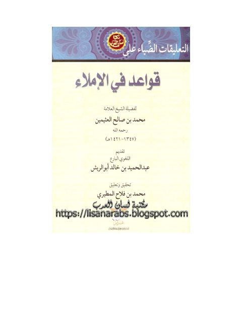

Downloads need an internet connection.
التعليقات الضياء على قواعد فى الإملاء
Authors: محمد بن صالح العثيمين
Editors: محمد بن فلاح المطيري
Publishers: دار غراس
**▫️ العنوان: التعليقات الضياء على قواعد فى الإملاء** ▪️ المؤلف: #محمد_بن_صالح_العثيمين ▫️ المحقق: #محمد_بن_فلاح_المطيري ▪️ الناشر: #دار_غراس_للطباعة_والنشر ▫️ تاريخ النشر: 1426هـ 2005م ▪️ بلد النشر: الكويت، #الكويت ▫️ الطبعة: 1 ▪️ عدد الأجزاء: 1 ▫️ الصفحات: 46 ▪️ نوع الوعاء: #كتاب ▫️ التصنيف الرئيسي: #اللغة_العربية ▪️ التصنيف الفرعي: #نحو_لغة ۪